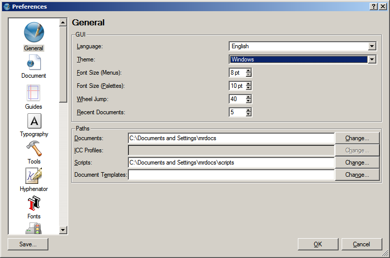
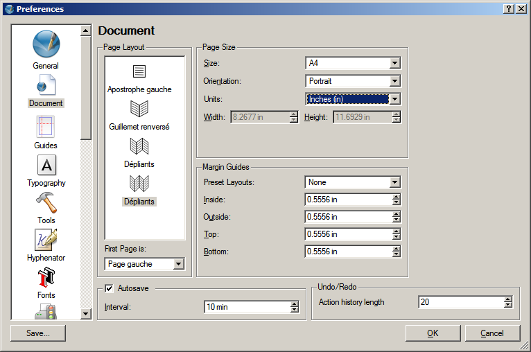
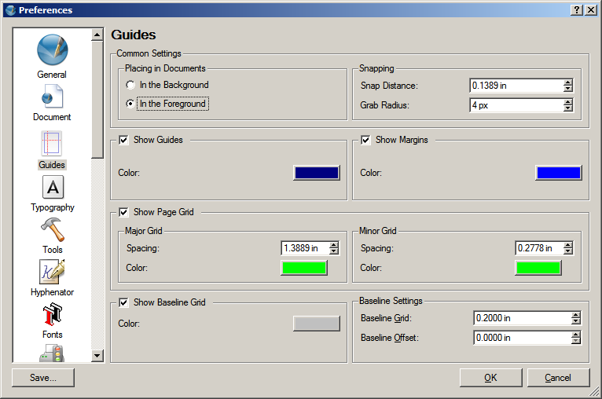
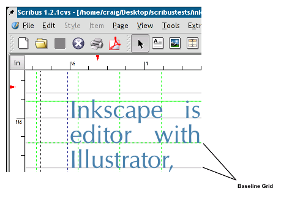
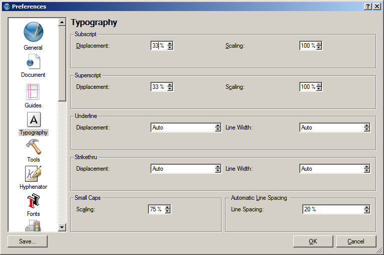
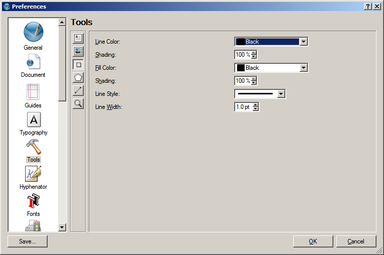
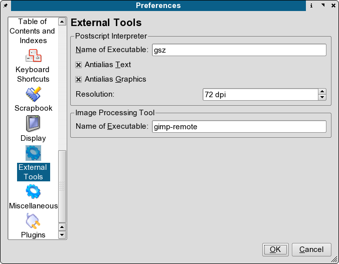

Der KonfigurationsdiaLog mit seinen Voreinstellungen ist gewissermaßen die Schaltzentrale von Scribus. Es hilft Ihnen dabei, die Einstellungen für neue Dokumente und das Programm als solches flexibel an Ihre Vorstellungen anzupassen. Wenn DTP für Sie Neuland ist, geben Ihnen zahlreiche Tooltips wertvolle Hilfestellung zu jeder einzelnen Einstellung, ergänzend zur Dokumentation, die natürlich auch vorhanden ist.
Die Voreinstellungen für Scribus befinden sich in einem versteckten Verzeichnis namens .scribus. In diesem Verzeichnis liegt die Datei .scribus.rc und eine weitere namens scribusfont.rc, die Ihre Schriftarten-Einstellungen enthält. Letztere ist im XML-Format gespeichert, so daß Sie sie bequem mit einem Texteditor einsehen können. Falls Sie das Scripting-Plugin installiert haben, findet sich hier auch die Datei scripter.rc, in der die zuletzt verwendeten Scripte gespeichert sind.
Um die Einstellungen für das gerade geöffnete Dokument zu ändern, müssen Sie den Dialog Datei > Dokument einrichten verwenden. Wenn Sie Datei > Allgemeine Einstellungen verwenden, werden die Voreinstellungen für Scribus global verändert. Danach "erbt" jedes neue Dokument diese Einstellungen.
Hier können Sie das Standard-Theme für Scribus wählen, wie etwa "Liquid" - oder eines der neuen Themes, die auf KDE-Plugins basieren. Wenn Sie KDE im Einsatz haben, übernimmt Scribus dessen Themes und Ausgestaltung. Falls Sie KDE nicht installiert haben, können Sie das Aussehen Ihrer Qt-Programme unabhängig mit Hilfe des Tools qtconfig anpassen. Öffnen Sie dazu einfach ein Konsolenfenster und geben qtconfig ein. Dessen Konfigurationsdialog ist eigentlich selbsterklärend, doch sollten Sie besser keine Schriftgröße über 12 Punkt wählen, denn einige Schaltflächen in den Scribus-Menüs wirken damit manchmal etwas seltsam.
|  |
Wenn Sie eine Maus mit Scrollrad benutzen, kommen Sie direkt in den Genuß einer netten Voreinstellung und können mit Scribus durch Ihre Dokumente scrollen. Der Rad-Vorschub bestimmt, wieviele Zeilen ein einzelner Scroll-Schritt beträgt.
Dies sind Pfadnamen, die Sie selbst bestimmen können, also für Ihre Dokumente, ICC-Farbprofile und Python-Scripte. Sie lassen sich jederzeit ändern, indem Sie auf ein gewünschte Verzeichnis klicken. Anmerkung: Versteckte Verzeichnisse müssen Sie erst sichtbar machen, indem Sie im Dateiauswahlfeld rechtsklicken und dann "Versteckte Dateien anzeigen" wählen.
Hier legen Sie Ihre Standard-Papiergröße, die Seitenränder und die Option "Automatisch speichern" fest. Autospeichern bedeutet, daß Scribus Ihr Dokument in festgelegten Zeitabständen mit der Dateiendung .sla.bak sichert.
|  |
Hier bestimmen Sie die Standard-Abstände und Farben der Hilfslinien sowie die Empfindlichkeit des Magnetrasters. Grundlinienraster sind eine Anordnung horizontaler Linien, welche bewirkt, daß mehrspaltiger Text sich horizontal an diesen ausrichtet, wie das folgende Beispiel zeigt. Die Einstellungen für die Abstände der Grundlinien befinden sich in Absatzvorlagen; gleiches gilt für die nächste Panel-Seite Typografie
Der Fangradius bestimmt, wie groß die Distanz zu einem Objekt sein darf, um es (noch) auszuwählen. Je kleiner der Wert, desto genauer - doch manchmal schwieriger beim Selektieren kleiner Objekte.
Grundlinienraster sind nicht-druckende Raster, die den Text über mehrere Spalten gleichmäßig auf der Seite ausrichten. Grundlinienversatz ist der Abstand vom Seitenanfang, d.h. wo sich die oberste Grundlinie befindet.
|  |
Auf dieser Seite können Sie die Optionen typografischer Merkmale wie hochgestellt, tiefgestellt, automatischer Zeilenabstand und die Skalierung von Kapitälchen ändern. Versatz bedeutet Verschiebung oder Abstand (nach oben/unten) zu normalem Text.
|  |
|  |
Hier können Sie für viele Werkzeuge und allgemeine Aufgaben die Voreinstellungen festlegen. Das gilt für Schriftart, Größe und Farbe, Text- und Bildrahmen sowie die Zoom-Einstellung. Fast alle dieser Voreinstellungen lassen sich auch nachträglich aufheben oder verändern, entweder per Rechtsklick und Kontextmenü oder über die Eigenschaften-Palette des ausgewählten Objekts.
|  |
Auf dieser Seite befinden sich die Voreinstellungen und Optionen für die Rahmendarstellung und den Seitenhintergrund, mit der Möglichkeit, nicht druckbare Bereiche in der gewählten Randfarbe darzustellen.
Mit "Größe des Displays anpassen" können Sie die Anzeige so einstellen, daß 1 Inch auf dem Bildschirm auch tatsächlich 1 Inch entspricht. Legen Sie dazu einfach ein normales Lineal am Bildschirm an, und justieren Sie den Schieberegler, bis das Maß übereinstimmt.
|  |
Hier können Sie angeben (oder ändern), wo sich Ihr Ghostscript-Interpreter und Ihr bevorzugtes Bildbearbeitungsprogramm befinden. Lesen Sie dazu auch die Tipps unter Erweiterte Ghostscript-Einstellungen. Und noch etwas gibt es zu beachten: Wenn Sie GIMP als Bildbearbeitungsprogramm benutzen, müssen Sie GIMP vollständig schließen, bevor Scribus wieder die Kontrolle zurück erhält. Dies läßt sich umgehen, indem gimp-remote benutzt wird. Dadurch wird entweder eine neue Instanz von Gimp gestartet, oder es wird die bereits laufende Programminstanz verwendet.
Sie können auch andere Bildbearbeitungsprogramme einsetzen, wie etwa CinePaint, Krita - und sogar Photoshop.